소방설비산업기사(전기) (2003-03-16 기출문제)
1과목: 소방원론
1. 건물화재시 플래쉬오버의 발생시간과는 관계가 없는 것은?
- 내장재료
- 개구율
- 화원의 크기
- 건물의 층수
(정답률: 76%)

2. 불티가 바람에 날리거나 또는 화재현장에서 상승하는 열기류 중심에 휩쓸려 원거리 가연물에 착화하는 현상을 무엇이라 하는가?
- 비화
- 전도
- 대류
- 복사
(정답률: 62%)
3. 인화성,가연성물질의 취급장소에 대한 화재와 폭발의 방지방법이 아닌 것은?
- 발화원을 없앤다.
- 취급장소 주위의 공기대신 불활성기체로 바꾼다.
- 밀폐된 용기내에 보관한다.
- 환기시설을 하지 않는다.
(정답률: 84%)
4. 건축물의 방화계획에서 공간적 대응에 해당하지 않는 것은?
- 특별피난계단
- 제연설비
- 직통계단
- 방화구획
(정답률: 61%)
5. 휘발성 물질에 불꽃을 접하여 발화될 수 있는 최저 온도는?
- 인화점
- 발화점
- 연소점
- 자연발화점
(정답률: 66%)
6. 훈소(燻燒)화재를 부분적으로 설명한 것이다. 옳지 않은 것은?
- 거의 밀폐된 내화구조로된 실내화재시 많이 일어난다.
- 신선한 공기의 공급이 불충분하여 연소(延燒)가 거의 정지 또는 매우 느리게 진행된다.
- 화재의 종기단계에 나타내는 현상으로 가연물이 거의 소진되고 더이상 연소(延燒)가 진행되지 않는 상태를 말한다.
- 훈소중에도 열축적은 계속되어 외부 공기가 갑자기 유입 될 때에는 급격한 연소(延燒)가 일어날 수 있는 상태를 말한다.
(정답률: 50%)
7. 방염에 대한 정의로 옳은 것은?
- 직물, 카페트, 실내장식물 등에 인위적으로 내열성능을 부여하여 불에 전혀 타지 않게 하는 것을 말한다.
- 직물, 카페트, 실내장식물 등에 대하여 화재시 화염의 전파를 완전히 차단하도록 가공처리한 것을 말한다.
- 연소하기 쉬운 건축물의 실내장식물 등 또는 그 재료에 어떤 방법을 가하여 연소하기 어렵게 만든 것을 말한다.
- 직물, 카페트, 실내장식물 등에 대하여 불연성능 및 내화성능을 갖도록 가공처리한 것을 말한다.
(정답률: 42%)
8. 방직공장에 대한 소화설비로 적응성이 가장 적은 것은?
- 물을 방사하는 것
- 강화액을 방사하는 것
- 포말(泡沫)을 방사하는 것
- 이산화탄소를 방사하는 것
(정답률: 47%)
9. 초기화재의 소화용으로 사용되지 않는 것은?
- 스프링클러설비
- 소화기
- 옥내소화전설비
- 연결송수관설비
(정답률: 77%)
10. 목재로 된 건축물이 화재가 발생하여 진화될 때까지의 과정을 설명한 것중 알맞은 것은?
- 무염착화→ 발염착화→ 최성기→ 연소낙하
- 발화→ 무염착화→ 연소낙하→ 진화
- 무염착화→ 최성기→ 연소낙하→ 진화
- 발염착화→ 무염착화→ 발화→ 진화
(정답률: 52%)
11. 화재 발생시 인명피해가 발생하는 주요 원인은 사람의 심리상태로 인한 화재현장에서의 행동 때문이다. 화재 발생장소에서의 사람의 심리상태로 볼 수 없는 것은?
- 금전 또는 물욕으로 화재시 신속한 대피를 못함
- 공포 끝에 당황하여 피난구를 제대로 찾지 못함
- 육친의 정대문에 자기가족을 구하려고 방황함
- 책임감 때문에 대피를 하지 않음
(정답률: 73%)
12. 기체, 고체, 액체에서 나오는 분해가스나 증기의 농도를 작게하여 연소를 중지시키는 소화방법은?
- 냉각소화
- 질식소화
- 제거소화
- 희석소화
(정답률: 45%)
13. 섬유중 화재 위험성이 가장 낮은 것은?
- 식물성 섬유
- 합성섬유
- 동물성 섬유
- 레이온
(정답률: 35%)
14. 가연물이 연소하기 쉬운 조건으로 틀린 것은?
- 산소와 친화력이 클 것
- 열전도율이 작을 것
- 활성화 에너지가 클 것
- 발열량이 클 것
(정답률: 71%)
15. 연기가 사람의 피난행동에 미치는 영향이 아닌 것은?
- 패닉현상
- 2차적인 재해
- 만발효과
- 질식
(정답률: 73%)
16. 화재로 인한 피해에는 직접피해와 간접피해로 나눌 수 있다. 간접피해에 속하는 것은?
- 내장재료의 피해
- 인명피해
- 업무중지에 의한 피해
- 소화수에 의한 설비피해
(정답률: 60%)
17. 자신이 연소하지 않고 다른 가연성 물질이 연소할 수 있도록 도와주는 가스는?
- N2
- O2
- Ar
- CO2
(정답률: 66%)
18. 다음 설명중 틀린 것은?
- 메탄, 에탄, 프로판, 부탄가스중에서 연소열이 가장 높은 것은 부탄가스이다.
- 액체표면으로부터 발생된 증기가 연소하는 현상이 액체 가연물의 연소과정이다.
- 발화온도가 높은 것은 연소점이 낮다.
- 헬륨은 산소 공급원과 관계가 없다.
(정답률: 53%)
19. 불꽃연소와 작열연소에 관한 설명으로 옳은 것은?
- 불꽃연소는 작열연소에 비해 대체로 발열량이 크다.
- 작열연소에는 연쇄반응이 동반된다.
- 분해연소는 작열연소의 한 형태이다.
- 작열연소는 불완전 연소시에, 불꽃연소는 완전 연소시에 나타난다.
(정답률: 32%)
20. D급 화재란 다음 중 어느 것을 의미하는가?
- A,B 급 화재 또는 A,C 급 화재 등의 복합 화재
- 모든 화재 중 인명 손실이 있는 화재
- 선박 화재 또는 임야 화재 등의 특수 화재
- 가연성 금속 화재
(정답률: 79%)
2과목: 소방전기회로
21. 단면적이 5[cm2] 인 도체가 있다. 이 단면을 3초동안 30[C]의 전하가 이동하면 전류는 몇[A] 인가?
- 2
- 10
- 20
- 90
(정답률: 56%)
22. 제어요소의 동작중 연속동작이 아닌 것은?
- P 동작
- PD 동작
- PＩ동작
- ON-OFF 동작
(정답률: 82%)
23. 어떤 회로에 전압을 인가하니 90도 위상이 뒤진 전류가 흘렀다. 이 회로는?
- 무유도성
- 유도성
- 용량성
- 저항성분
(정답률: 53%)
24. 다음의 법칙 내용중 성격이 다른 하나는?
- 노이만의 법칙
- 페러데이의 법칙
- 렌쯔의 법칙
- 암페어의 오른나사 법칙
(정답률: 45%)
25. 60[Hz], 4극, 슬립5[%]인 유도 전동기의 회전수[rpm]는?
- 600
- 950
- 1200
- 1710
(정답률: 41%)
26. 맥동률이 가장 적은 정류방식은?
- 단상 반파식
- 단상 전파식
- 3상 반파식
- 3상 전파식
(정답률: 67%)
27. 변압기의 고압측에 몇 개의 탭을 만들어 놓았다. 그 이유는?
- 부하전류를 조정하기 위하여
- 변압기의 여자전류를 조정하기 위하여
- 수전점의 전압을 조정하기 위하여
- 예비용 단자로 사용하기 위하여
(정답률: 38%)
28. 정전용량 2㎌의 콘덴서를 직류 3000V로 충전할 때 이것에 축적되는 에너지는 몇 Ｊ 인가?
- 6
- 9
- 12
- 18
(정답률: 56%)
29. v=Vmsin(ωt+θ)의 실효값은?
- Vm
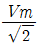
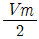
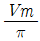
(정답률: 67%)
30. 그림과 같은 회로에서 Em=48
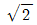
[V], R=20Ω인 전류의 실효치 몇 A 인가?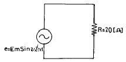
- 2.4
- 2.2
- 2.0
- 1.5
(정답률: 50%)
31. 60mH의 코일에 전류가 10초간에 5A 변화되었다면 유도 되는 기전력은 몇 mV 가 되겠는가?
- 30
- 50
- 300
- 500
(정답률: 49%)
32. SCR과 동작특성이 비슷한 것은?
- 전계효과 트랜지스터(FET)
- 다이리스터(Thyristor)
- 터널다이오드
- 양극성 트랜지스터
(정답률: 50%)
33. 어느 직류전원에 전류를 흘릴 때 전원전압을 3배로 하여 흐르는 전류가 1.5배가 되도록 하려면 저항값은 몇 배로 하여야 하는가?
- 1.25
- 1.5
- 2
- 2.5
(정답률: 48%)
34. 표와 같은 진가표의 Gate는?
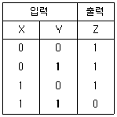
- AND
- OR
- NAND
- NOR
(정답률: 57%)
35. 정류기형 계기의 눈금이 지시하는 것은?
- 최대값
- 실효값
- 평균값
- 순시값
(정답률: 57%)
36. 논리식
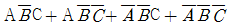
를 간략화한 후 논리회로를 그리면?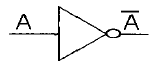
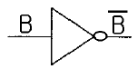
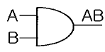
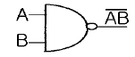
(정답률: 48%)
37. 프로그램제어에서 스캔타임의 계산식은?
- 스텝수 ＋ 처리속도
- 스텝수 － 처리속도
- 스텝수 × 처리속도
- 스텝수 ÷ 처리속도
(정답률: 56%)
38. 유량, 압력, 액위, 농도, 밀도 등의 플랜트나 생산공정중의 상태량을 제어량으로 하는 제어는?
- 프로그램제어
- 프로세스제어
- 비율제어
- 자동조정
(정답률: 73%)
39. 전원전압을 안정하게 유지하기 위하여 사용되는 다이오드는?
- 보드형다이오드
- 터널다이오드
- 제너다이오드
- 바랙터다이오드
(정답률: 76%)
40. 도체의 저항률을 ρ, 단면적을 S, 길이를 ℓ 이라고 할 때 저항값 R은?
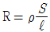
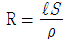
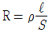
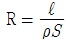
(정답률: 51%)
3과목: 소방관계법규
41. 소방본부장이나 소방서장이 하여야 할 업무가 아닌것은?
- 화재원인 및 피해재산 조사
- 실화혐의자에 대한 질문 및 압수된 증거물 조사
- 관계보험회사의 화재원인과 피해상황조사의 허용
- 화재에 의한 피해자의 손실 보상
(정답률: 64%)
42. 다음중 옥외탱크저장소의 방유제 면적은 몇 m2 이하로 하는가?
- 20000m2
- 50000m2
- 80000m2
- 100000m2
(정답률: 40%)
43. 소방관서의 배치기준과 소방관서가 화재의 예방·경계·진압과 구급·구조업무를 수행하는데 필요한 장비·인력등에 관한 소방력의 기준은 무엇으로 정하는가?
- 대통령
- 행정자치부령
- 소방서장
- 소방본부장
(정답률: 40%)
44. 피난기구는 소방대상물의 피난층, 2층 및 층수가 몇 층 이상인 층을 제외한 모든 층에 설치하여야 하는가?
- 7
- 9
- 11
- 13
(정답률: 64%)
45. 소방시설 공사의 등록기준으로 규정하고 있는 것은?
- 기술능력 - 기술경력 - 시설 및 장비
- 기술능력 - 기술경력 - 도급실적
- 기술능력 - 자본금 - 시설 및 장비
- 기술능력 - 자본금 - 도급실적
(정답률: 54%)
46. 위험물제조소의 배출설비에서 배출능력은 1시간당 배출장소 용적의 몇배 이상으로 하여야 하는가?
- 20
- 15
- 10
- 5
(정답률: 41%)
47. 방화관리업무 등의 강습의 실시에 대한 설명으로 옳지 않은 것은?
- 방화관리업무에 관한 강습은 한국소방안전협회장이 실시한다.
- 실무교육은 소방본부장 또는 소방서장이 실시한다.
- 방화관리업무에 대한 강습과목에는 소방법규가 포함된다.
- 실무교육기간, 과목 기타 필요한 사항은 행정자치부 장관이 정한다.
(정답률: 37%)
48. 소방시설공사업의 등록의 기준사항이 아닌 것은?
- 기술능력
- 자본금
- 시설 및 장비
- 관할 시.도지사의 추천서
(정답률: 68%)
49. 위험물제조소에서 취급 위험물의 품명 변경으로 변경허가 신청을 하려고 한다. 제조소등의 변경허가신청서에 첨부하여야 할 서류인 것은?
- 위치·구조 설계도면
- 위험물제조소의 기술능력
- 제조소등설치허가증
- 구조설비명세표
(정답률: 38%)
50. 인명구조기구를 설치하여야 할 소방대상물은?
- 7층이상인 관광호텔 및 5층이상인 병원
- 11층이상인 아파트 및 5층이상인 백화점
- 5층이상인 오피스텔 및 관광휴게시설
- 7층이상인 무도학원 및 3층이상인 영화관
(정답률: 42%)
51. 특수장소로써 1급 방화관리대상물인 경우 방화관리자를 두어야 할 대상물은?
- 층수가 7층인 특수장소
- 연면적이 5000[m2] 특수장소
- 가연성가스를 1천톤이상 저장. 취급하는 시설
- 6층 건물로써 바닥면적의 합계가 5000[m2] 특수장소
(정답률: 66%)
52. 무창층이라 함은 지상층 중 일정기준 이상의 개구부의 면적의 합계가 그 층의 바닥면적의 30분의 1이하가 되는 층을 말한다.이 경우 개구부의 기준에 해당되지 않는 것은?
- 개구부의 크기가 지름 40[cm]이상의 원이 내접 할 수 있을 것
- 도로 또는 차량의 진입이 가능한 공지에 면할 것
- 그층의 바닥면으로 부터 개구부 밑부분 까지의 높이가 1.2[m]이내일 것
- 내부 또는 외부에서 쉽게 파괴 또는 개방이 가능할 것
(정답률: 64%)
53. 화재의 조사에 관련된 다음 설명중 옳은 것은?
- 관계 보험회사가 화재원인과 피해상황을 조사하고자 할 때에는 허용하지 아니하여야 한다.
- 화재원인과 피해조사는 소방공무원과 경찰공무원이 별도로 조사하여야 한다.
- 방화와 실화의 혐의가 있다고 인정되는 때에는 지체 없이 관할 경찰서장에게 알려야 한다.
- 소방공무원은 실화에 대한 필요한 증거를 수집·보존할 수 없으며, 필요시에는 경찰에 의뢰하여야 한다.
(정답률: 54%)
54. 소방용 기계·기구 등의 형식승인·검정·심사 및 형식승인의 변경등에 관한 업무의 위탁은 어디에 하여야 하는가?
- 한국소방검정공사
- 시·도지사
- 행정자치부
- 소방본부
(정답률: 41%)
55. 위험물이 류별에 따른 주의사항에 대한 표기가 틀린것은?
- 제2류 위험물 - 화기주의
- 제3류 위험물 - 물기엄금
- 제4류 위험물 - 화기주의
- 제5류 위험물 - 화기엄금
(정답률: 64%)
56. 위험물탱크안전성능시험자의 등록을 할 수 있는 사람은?
- 한정치산자
- 파산자로서 복권되지 아니한 사람
- 위험물탱크안전성능시험자의 등록이 취소된 날부터 6월이 된 사람
- 금고이상의 형의 집행유예의 선고를 받고 그 집행 유예의 기간이 끝난 사람
(정답률: 60%)
57. 소화기구를 분류할 때 간이소화용구에 해당하지 않는 것은?
- 소화약제에 의한 간이소화용구
- 팽창질석 또는 팽창진주암
- 수동식소화기
- 마른 모래
(정답률: 39%)
58. 특수가연물에서 제2종 가연물이 아닌것은?
- 나프탈렌
- 고체파라핀
- 송지
- 고무풀
(정답률: 35%)
59. 제연설비를 설치하여야 할 소방대상물의 기준으로 틀린것은?
- 관람집회 및 운동시설로서 무대부의 바닥면적이 200m2이상인 것
- 근린생활 및 위락시설로서 지하층 또는 무창층의 바닥면적이 500m2이상인 것
- 터널을 제외한 지하가로서 연면적 1000m2이상인 것
- 특수장소에 부설된 특별피난계단 및 비상용승강기의 승강장
(정답률: 47%)
60. 방화관리자의 자격요건에 전혀 해당되지 않는 사람은?
- 전기기사자격증 소지자
- 소방설비기사자격증 소지자
- 경찰공무원으로 2년이상 간부직에 근무한 자
- 광산보안기사로서 보안감독자로 선임된 자
(정답률: 52%)
4과목: 소방전기시설의 구조 및 원리
61. 누전경보기용 검출기로는 영상변류기를 사용하는데 그 이유는?
- 각 상에 흐르는 전류의 총합은 0 이기 때문에
- 누전이 생기는 경우 영상변류기에 전류가 흐르지 않기 때문에
- 지락발생시 변류기에 전류가 발생되지 않으므로
- 경계전로에 부하가 평형되었을 때 기전력이 발생되게 됨으로
(정답률: 33%)
62. 비상콘센트설비에 대한 설명으로 틀린 것은?
- 보호함의 표면에는 "비상콘센트"라고 표시한 표지를 하여야 한다.
- 보호함 상부에는 청색의 표시등을 설치하여야 한다.
- 접지는 제3종 접지공사로 하고 접지선은 1.6mm이상의 굵기이어야 한다.
- 비상콘센트의 플럭접속기의 칼받이의 접지극에는 접지공사를 하여야 한다.
(정답률: 56%)
63. 일국소의 온도 상승율이 일정한 온도상승율 이상으로 상승하면 동작하는 감지기는?
- 정온식 스포트형 감지기
- 차동식 스포트형 감지기
- 보상식 스포트형 감지기
- 차동식 분포형 감지기
(정답률: 46%)
64. 지하층을 제외한 층수가 몇 층이상으로 연면적이 2000m2 이상인 소방대상물에 옥내소화전설비가 설치된 경우 비상전원을 설치하는가?
- 3
- 5
- 6
- 7
(정답률: 47%)
65. 누전경보기는 몇[V]이하의 경계전로에 부착하는가?
- 900
- 800
- 700
- 600
(정답률: 65%)
66. 납축전지의 공칭용량은 일반적으로 몇 시간율로 하는가?
- 5
- 7
- 10
- 15
(정답률: 48%)
67. 경보기구의 정격전압이 몇 V 이상이면 그 금속제 외함에는 접지단자를 설치하여야 하는가?
- 60
- 100
- 150
- 200
(정답률: 41%)
68. 가스누설경보기의 수신기가 아닌 것은?
- G형 수신기
- GP형 수신기
- GR형 수신기
- GG형 수신기
(정답률: 64%)
69. 자동화재탐지설비에서 감지기회로의 절연저항은 직류 250V의 절연저항측정기로 측정한 경우에 몇 MΩ 이상이어야 하는가?
- 0.1
- 0.5
- 2
- 4
(정답률: 61%)
70. 발신기의 누름버튼스위치를 눌렀으나 수신기가 화재표시 동작을 하지 않을 경우, 그 원인으로 가장 적당한 것은? (단, 배선 및 수신기는 정상이다.)
- 발신기내 응답램프가 없다.
- 발신기 접점의 접촉불량이다.
- 발신기내에 설치되어 있는 종단저항이 없다.
- 발신기내의 전화선의 단자가 빠져있다.
(정답률: 56%)
71. 자동화재탐지설비의 배선이 잘못 연결된 것은?
- 수신기에서 비상전원간 - 내화배선
- 수신기에서 감지기간 - 내열배선
- 수신기에서 발신기간 - 내열배선
- 수신기에서 지구음향장치간 - 일반배선
(정답률: 54%)
72. 열전대식감지기의 완성검사시 미터릴레이 시험기만으로 검사할 수 있는 것은?
- 열전대선의 도체저항시험
- 열전대부의 작동시험
- 절연저항 측정시험
- 검출부의 작동시험
(정답률: 11%)
73. 보상식 스포트형 감지기는 정온점이 감지기 주위의 평상시 최고온도보다 섭씨 몇도이상 높은것으로 설치하여야하는?
- 5
- 10
- 20
- 30
(정답률: 65%)
74. 1급 누전경보기는 경계전로의 정격전류가 몇[A]를 초과하는 전로에 설치하는가?
- 60
- 50
- 40
- 30
(정답률: 75%)
75. 자동화재속보설비의 속보기는 화재탐지설비로부터 수신한 신호를 몇 회이상 속보할 수 있어야 하는가?
- 2
- 3
- 5
- 7
(정답률: 76%)
76. 열전대식 차동식분포형감지기의 열전대부와 접속전선의 접속방법은?
- 슬리브(sleeve)에 삽입한 후 납땜한다.
- 슬리브(sleeve)에 삽입한 후 압착한다.
- 검출부 단자에 삽입한 후 납땜한다.
- 검출부 단자에 삽입한 후 압착한다.
(정답률: 34%)
77. 무선통신보조설비의 지상에 설치하는 무선기기 접속단자 보호함의 표면 색상은?
- 흑색
- 적색
- 백색
- 황색
(정답률: 50%)
78. 제연설비 제어반의 기능이 아닌 것은?
- 급기구의 개폐에 대한 감시 및 원격 조작기능
- 유입공기를 배출하기위한 배출기의 감시 및 조작기능
- 수동 기동장치의 작동여부에 대한 감시기능
- 제어선로의 단선에 대한 원격조작기능
(정답률: 43%)
79. 자동화재탐지설비의 P형 2급 수신기는 접속가능한 회로수가 최대 몇 회로 이하인가?
- 8
- 7
- 6
- 5
(정답률: 32%)
80. 다음 중 비상조명등의 종류가 아닌 것은?
- 전용형
- 상시형
- 겸용형
- 방폭형
(정답률: 24%)